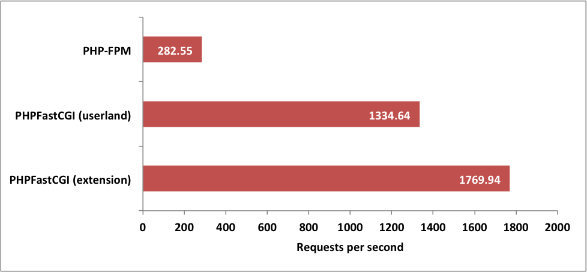

Soup up Symfony
@AndrewCarterUK
Why Application Performance?
We might want to increase capacity
We might want to improve user experience
Performance requires efficiency
Minimise work performed to create a response
An Analogy
HTTP Pipeline - as a Restaurant
| Client |  |
Customer |
|---|---|---|
| Server |  |
Restaurant |
| Request |  |
Order |
| Response |  |
Food |
| Application | Chef | |
| HTTP Daemon | Waiter/Waitress | |
Restaurant PHP
|
Customer enters restaurant | |
| Waitress takes order |
|
|
| Waitress creates chef and gives order | ||
| Chef makes food |
|
|
|
Waitress gives food to customer |
|
| Waitress brutally murders chef | ||
The Proposal?
Don't kill the chef
A History Lesson
CGI: Common Gateway Interface
CGI application must be executable by the web server
One instance of our application per request
HTTP request provided via environment variables
HTTP response written to standard output by application
Back in the day...
when I was 3
PHP was just a set of CGI binaries
We can still integrate PHP using CGI
We can also use native web server modules
We can also use PHP-FPM
PHP-FPM uses FastCGI to keep PHP alive between requests
We are still killing our chef
Need to keep Symfony alive between requests
How?
With a legacy application?
include 'lib/common.php';
include 'lib/database.php';
$escaped_url = mysql_real_escape_string($_SERVER['REQUEST_URI']);
$result = mysql_query(
'SELECT html ' .
'FROM pages ' .
'WHERE url=\'' . $escaped_url . '\''
);
if (false === $result || !($page = mysql_fetch_assoc($result))) {
header('HTTP/1.1 404 Not Found');
$page = get_404_page();
}
echo $page['html'];
With Symfony?
use Symfony\Component\ClassLoader\ApcClassLoader;
use Symfony\Component\HttpFoundation\Request;
$loader = require_once __DIR__.'/../app/bootstrap.php.cache';
require_once __DIR__.'/../app/AppKernel.php';
$kernel = new AppKernel('prod', false);
$kernel->loadClassCache();
$request = Request::createFromGlobals();
$response = $kernel->handle($request);
$response->send();
$kernel->terminate($request, $response);
Turning Symfony into a Server
PHP-PM
PHP Process Manager
Turns Symfony into a HTTP server
- Based on ReactPHP
- Process Manager
- Load Balancer
- Hot-Code Reload
- Static File Serving
Can actually be used as a development server
$ git clone https://github.com/php-pm/php-pm.git
$ cd php-pm
$ composer install
$ ln -s `pwd`/bin/ppm /usr/local/bin/ppm
$ ...
$ cd /path/to/symfony-project
$ composer require php-pm/httpkernel-adapter:dev-master
$ ./bin/ppm start --bootstrap=symfony --app-env=prod --workers=20
PHPFastCGI
Turns Symfony into a FastCGI application
- Easy to install bundle
- Appears as console command
- Silex, Slim and Zend Expressive adapters too
- Automatic shutdown mode
$ composer require phpfastcgi/speedfony-bundle
// ...
class AppKernel extends Kernel
{
public function registerBundles()
{
$bundles = array(
// ...
new PHPFastCGI\SpeedfonyBundle\PHPFastCGISpeedfonyBundle(),
);
// ...
$ php bin/console speedfony:run --env=prod --port=8000
NGINX Configuration
upstream workers {
server localhost:5000;
server localhost:5001;
server localhost:5002;
server localhost:5003;
}
server {
# ...
location ~ ^/app\.php(/|$) {
fastcgi_pass unix:/var/run/php5-fpm.sock; # BEFORE
fastcgi_pass workers; # AFTER
# ...
}
}
PHP-PM vs. PHPFastCGI
- HTTP vs. FastCGI
- PHP-PM is much more popular
- PHP-PM is based on ReactPHP
How much faster is this?
Benchmarking Application
500 page Symfony application
Single route which selects a random page from database
Renders using Twig
Clears entity repository after each request
Benchmarking System
VMWare Fusion - 2GB RAM - 4 cores (Intel Core i7, 3.4 GHz)
Ubuntu 64-bit Server 15.04
PHP 5.6.4
NGINX
'ab', 50000 requests, concurrency level of 20
Control Test
OPcache enabled
PHP-FPM
First Test
6 worker processes
FastCGI protocol implemented in PHP userland
Second Test
6 worker processes
FastCGI protocol implemented by PHP extension
The Results

Problems in Paradise
Memory Leaks
Who has programmed in a language where they had to manually manage memory?
Task: Join two strings together
In C...
char * join_strings(const char * string1, const char * string2)
{
char * new_string;
new_string = malloc(strlen(string1) + strlen(string2) + 1);
if (new_string == NULL) {
return NULL;
}
strcpy(new_string, string1);
strcat(new_string, string2);
return new_string;
}
char * str;
str = join_strings("Hello, ", name);
// do stuff with str
free(str);
In PHP...
$str = 'Hello, ' . $name;
// do stuff with $str
// now what?
How do we keep our application memory clean in PHP?
function some_routine($name) {
$str = 'Hello, ' . $name;
// do stuff with $str
}
// no more $str
$str = 'Hello, ' . $name;
// do stuff with $str
unset($str);
Remove references to unrequired objects
What might hide references?
Doctrine ORM
$em = $this->getDoctrine()->getManager();
$repository = $em->getRepository('Bundle:Page');
$page = $repository->find($id);
$response = $this->render(
'Bundle:Default:page.html.twig',
['page' => $page]
);
$em->detach($page);
return $response;
Monolog
$log = new Logger('app');
$handler = new ErrorLogHandler();
$fingersCrossedHandler = new FingersCrossedHandler($handler);
$logger->pushHandler($fingersCrossedHandler);
$logger->notice('Hello');
$logger->notice('It\'s me');
$logger->notice('I was wondering if...');
// $logger->alert('Something went wrong');
PHPFastCGI and PHP-PM support request limits
PHPFastCGI also supports memory and time limits
NoMoreLeaksBundle
github.com/AndrewCarterUK/NoMoreLeaksBundle
Timeouts
ERROR 2006: MySQL server has gone away
Can be hard to detect and manage whilst testing
Doctrine ORM (2.5)
$em = $this->getDoctrine()->getManager();
$connection = $em->getConnection();
if ($connection->ping() === false) {
$connection->close();
$connection->connect();
}
$repository = $em->getRepository('Bundle:Page');
$page = $repository->find($id);
Error Handling
Distinguish between request errors and application errors
HTTP status codes become more important
4XX - Request Error
5XX - Application Error
Let the application die if recovery is not possible
PHPFastCGI has an auto-shutdown mode for 5XX responses
Sessions
The evil $_SESSION superglobal
PHP-PM provides a handler for regerenating sessions
Anything that hits the $_SESSION superglobal is nasty
Good opportunity to investigate if you have the time
Do you need PHP-PM / PHPFastCGI?
Is your application fast enough already?
Why bother with the risk?
PHPFastCGI is a tool for high performance PHP applications
However
Well designed applications should not leak memory
Well designed applications should handle errors properly
Can be very easy to do this with Symfony
To Conclude
Consider long running processes when developing components and services
FastCGI (and HTTP) are designed to allow applications to stay alive between requests
PHP is not designed to allow applications to stay alive between requests
That is possibly why few make the effort to do this
Used carefully, this can break performance boundaries
Any questions?
https://joind.in/talk/d9162
@AndrewCarterUK
https://github.com/php-pm/php-pm
http://phpfastcgi.github.io
http://github.com/PHPFastCGI/SpeedfonyBundle
http://github.com/PHPFastCGI/FastCGIDaemon